Estimating Simple Models from Real Laboratory Process Data
In this demo we show how System Identification Toolbox™ can be used to develop and analyze simple models from a real laboratory process data. We start with a small description of the process, learn how to import the data to the toolbox and preprocess/condition it and then proceed systematically to estimate parametric and non parametric models. Once the models have been identified we compare the estimated models and also validate the model to the actual output data from the experiment.
Contents
System Description
This case study concerns data collected from a laboratory scale "hairdryer". (Feedback's Process Trainer PT326; See also page 525 in Ljung, 1999). The process works as follows: Air is fanned through a tube and heated at the inlet. The air temperature is measured by a thermocouple at the outlet. The input (u) is the power over the heating device, which is just a mesh of resistor wires. The output is the outlet air temperature (or rather the voltage from the thermocouple).
Setting up Data for Analysis
First we load the input-output data to the MATLAB® Workspace.
load dryer2;
Vector y2, the output, now contains 1000 measurements of temperature in the outlet airstream. Vector u2 contains 1000 input data points, consisting of the voltage applied to the heater. The input was generated as a binary random sequence that switches from one level to the other with probability 0.2. The sampling interval is 0.08 seconds.
The next step is to set up the data as an iddata object
dry = iddata(y2,u2,0.08);
To get information about the data, just type the name of the iddata object at the MATLAB command window:
dry
Time domain data set with 1000 samples.
Sampling interval: 0.08
Outputs Unit (if specified)
y1
Inputs Unit (if specified)
u1
To inspect the properties of the above iddata object, use the get command:
get(dry)
ans =
Domain: 'Time'
Name: ''
OutputData: [1000x1 double]
y: 'Same as OutputData'
OutputName: {'y1'}
OutputUnit: {''}
InputData: [1000x1 double]
u: 'Same as InputData'
InputName: {'u1'}
InputUnit: {''}
Period: Inf
InterSample: 'zoh'
Ts: 0.0800
Tstart: []
SamplingInstants: [1000x0 double]
TimeUnit: ''
ExperimentName: 'Exp1'
Notes: {}
UserData: []
For better book-keeping, it is good practice to give names to the input and output channels and Time units. These names would be propagated throughout the analysis of this iddata object:
dry.InputName = 'Power'; dry.OutputName = 'Temperature'; dry.TimeUnit = 'Seconds'; dry.InputUnit = 'Watt'; dry.OutputUnit = '^o C';
Now that we have the data set ready, we choose the first 300 data points for model estimation.
ze = dry(1:300)
Time domain data set with 300 samples.
Sampling interval: 0.08 Seconds
Outputs Unit (if specified)
Temperature ^o C
Inputs Unit (if specified)
Power Watt
Preprocessing the Data
Plot the interval from sample 200 to 300:
plot(ze(200:300));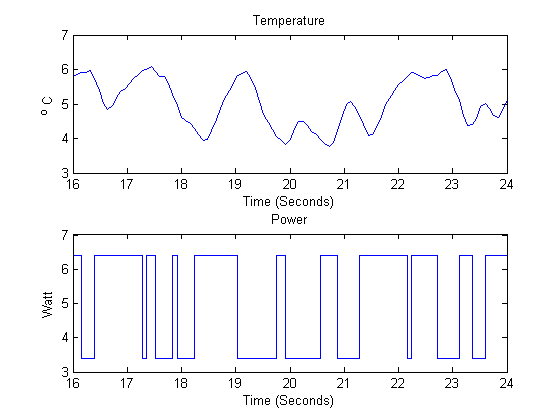
Figure 1: A snapshot of the measured hair-dryer data.
From the above plot, it can be observed that the data is not zero mean. So let us remove the constant levels and make the data zero mean.
ze = detrend(ze);
The same data set after it has been detrended:
plot(ze(200:300)) %show samples from 200 to 300 of detrended data

Figure 2: Detrended estimation data.
Estimating Non-Parametric and Parametric Models
Now that the dataset has been detrended and there are no obvious outliers, let us first estimate the impulse response of the system by correlation analysis to get some idea of time constants and the like:
impulse(ze,'sd',3); %impulse response with 3 standard deviations confidence region

Figure 3: Impulse response of the system estimated using ze.
The dashed dotted lines mark a 99% confidence interval. There is a time delay (dead-time) of 3 samples before the output responds to the input (significant output outside the confidence interval). Adding 'fill' as an extra argument to the impulse command gives an alternate display.
impulse(ze,'sd',3,'fill');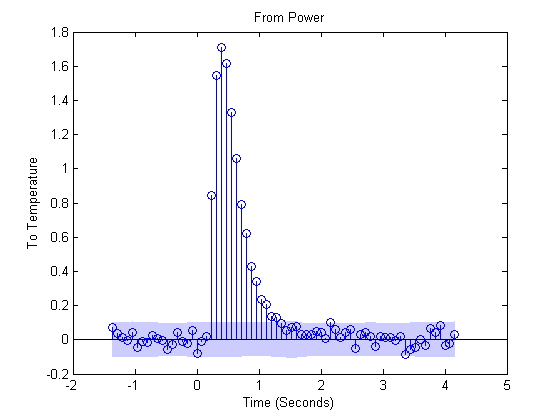
The simplest way to get started on a parametric estimation routine is to build a state-space model where the model-order is automatically determined, using a prediction error method. Let us estimate a model using the pem technique:
m1 = pem(ze);
To inspect the properties of the estimated model, just enter the model-name at the command window:
m1
State-space model: x(t+Ts) = A x(t) + B u(t) + K e(t)
y(t) = C x(t) + D u(t) + e(t)
A =
x1 x2 x3
x1 0.95246 -0.21026 0.053065
x2 0.25434 0.6483 0.23707
x3 -0.051355 -0.66102 0.13742
B =
Power
x1 0.00031518
x2 0.01563
x3 0.057909
C =
x1 x2 x3
Temperature -14.058 0.094752 0.042548
D =
Power
Temperature 0
K =
Temperature
x1 -0.066092
x2 0.0094344
x3 0.092941
x(0) =
x1 0
x2 0
x3 0
Estimated using PEM using SearchMethod = Auto from data set ze
Loss function 0.00148033 and FPE 0.00156915
Sampling interval: 0.08 Seconds
To retrieve the properties of this model, for example to obtain the A matrix of the discrete state-space object generated above, we can use the dot operator:
A = m1.a;
Refer the demo on 'Data and Model Objects in System Identification Toolbox' for more information regarding model objects. To find out which properties of the model object can be retrieved, use get command:
get(m1)
The free model parameterization means that the matrix elements
have no well defined variance. To display the standard deviations
of the matrix elements, first convert to canonical form by
Model.ss = 'can'.
ans =
A: [3x3 double]
B: [3x1 double]
C: [-14.0584 0.0948 0.0425]
D: 0
K: [3x1 double]
X0: [3x1 double]
dA: []
dB: []
dC: []
dD: []
dK: []
dX0: []
SSParameterization: 'Free'
As: [3x3 double]
Bs: [3x1 double]
Cs: [NaN NaN NaN]
Ds: 0
Ks: [3x1 double]
X0s: [3x1 double]
StateName: {3x1 cell}
InitialState: 'Auto'
nk: 1
DisturbanceModel: 'Estimate'
CanonicalIndices: 'Auto'
Name: ''
Ts: 0.0800
InputName: {'Power'}
InputUnit: {'Watt'}
OutputName: {'Temperature'}
OutputUnit: {'^o C'}
TimeUnit: 'Seconds'
ParameterVector: [18x1 double]
PName: {}
CovarianceMatrix: []
NoiseVariance: 0.0015
InputDelay: 0
Algorithm: [1x1 struct]
EstimationInfo: [1x1 struct]
Notes: {}
UserData: []
Observe the property named 'SSParameterization'. The 'free' parameterization means that the matrix elements have no well defined variance. To display the standard deviations of the matrix elements, convert the model to a canonical form, by doing:
Model.SSParameterization = 'Canonical'
Analyzing the Estimated Model
The Bode plot of the generated model can be obtained using the bode function as shown below:
bode(m1)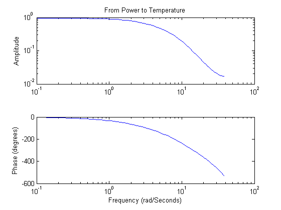
Figure 4: Bode response of the estimated model with automatically chosen model order.
An alternative is to consider the nyquist plot, and mark uncertainty regions at certain frequencies with ellipses, corresponding to 3 (say) standard deviations:
nyquist(m1,'sd',3)
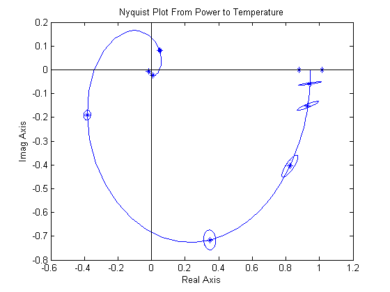 Figure 5: Nyquist plot of estimated model showing the uncertainty regions at certain frequencies.
The step response of the model m1 estimated above may also be compared with a step response that is directly computed from the data in a non-parametric way:
step(m1,'b',ze,'r');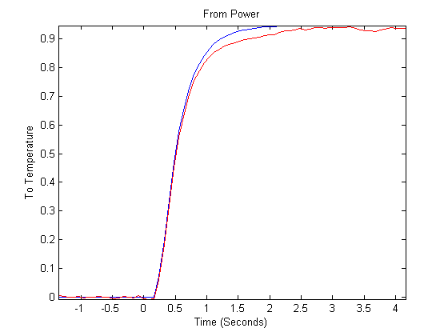
Figure 6: Step response of the estimated model compared against the non-parametric step response
Estimating Models with a Prescribed Structure
System Identification Toolbox can also be used to obtain a model with a prescribed structure. For example, a difference equation model with 2 poles, 1 zero and 3 delays can be obtained using the arx function as shown below:
m2 = arx(ze,[2 2 3]);
To look at the model, enter the model name at the command window.
m2
Discrete-time IDPOLY model: A(q)y(t) = B(q)u(t) + e(t)
A(q) = 1 - 1.274 q^-1 + 0.3935 q^-2
B(q) = 0.06662 q^-3 + 0.04448 q^-4
Estimated using ARX on data set ze
Loss function 0.00166284 and FPE 0.00170718
Sampling interval: 0.08 Seconds
Validating the Estimated Model to Experimental Output
How good is an estimated model? One way to find out is to simulate it and compare the model output with measured output. Select a portion of the original data that was not used in building the model, say from samples 800 to 900. Once the validation data has been preprocessed, we use the compare function as shown below to view the quality of prediction:
zv = dry(800:900); % select an independent data set for validation zv = detrend(zv); % preprocess the validation data compare(zv,m1); % perform comparison of simulated output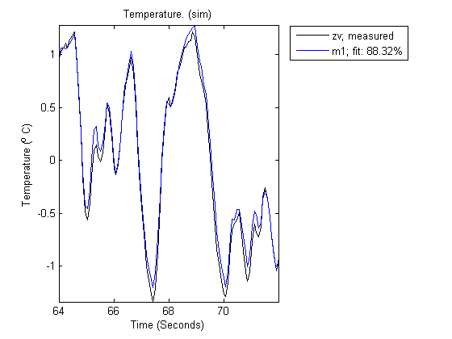
Figure 7: Simulation of model output compared against a validation data set.
It can be observed here that the agreement is very good. The "Fit" value shown is calculated as:
Fit = 100*(1 - norm(yh - y)/norm(y-mean(y)))
where y is the measured output (=|zv.y|), and yh is the output of the model m1.
Comparing Estimated Models
To compare the performance of the models that we have estimated, for example m1 and m2 with the validation data zv, we can again use the compare command:
compare(zv,m1,'b',m2,'r');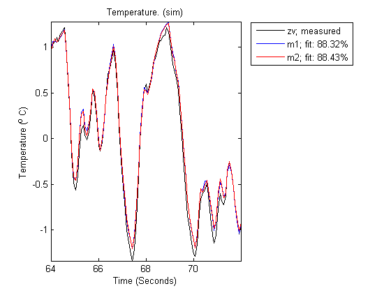
Figure 8: Comparing the predictions of models m1 and m2 on validation data set ze.
The pole-zero plots for the two models can be obtained using pzmap:
pzmap(m1,'b',m2,'r');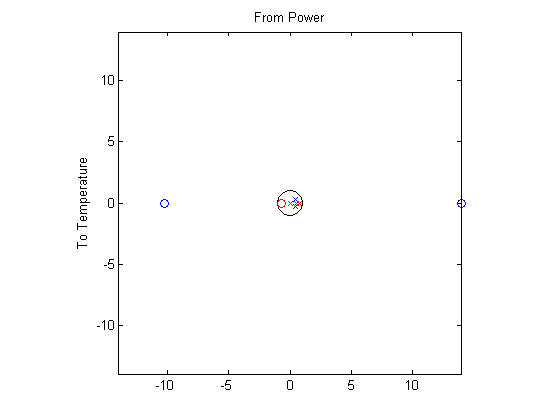
Figure 9: Poles and zeros of the two models m1 and m2.
The uncertainties in the poles and zeroes can also be obtained. In the following statement, '3' refers to the number of standard deviations.
pzmap(m1,'b',m2,'r','sd',3);

Figure 10: Pole-zero map with uncertainty regions.
To zoom in on the unit circle use:
pzmap(m1,'b',m2,'r','sd',3,'axis',1);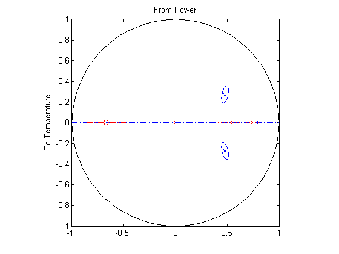
Figure 11: Pole-zero map zoomed around unit circle.
The frequency functions corresponding to the two models can be displayed as:
bode(m1,m2)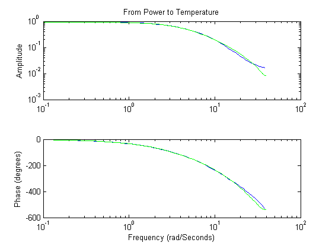
Figure 12: Bode responses of models m1 and m2.
The frequency functions above that are obtained from the models can be compared with one that is obtained using a non-parametric spectral analysis method (spa):
gs = spa(ze);
The spa command results produces an IDFRD object. The bode function can again be used for a comparison with the transfer functions of the models obtained.
bode(m1,m2,gs); legend('m1','m2','gs')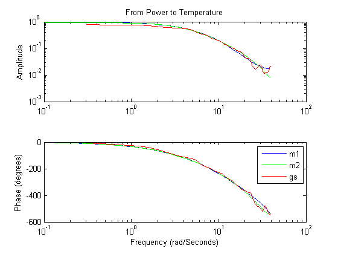
Figure 13: Bode responses of m1 and m2 compared against the non-parametric spectral estimation model gs.
The frequency responses from the three models/methods are very close. This indicates that this response is reliable.
Also, a Nyquist plot can be analyzed with the uncertainty regions marked at certain frequencies:
nyquist(m1,m2,gs,'sd',3)
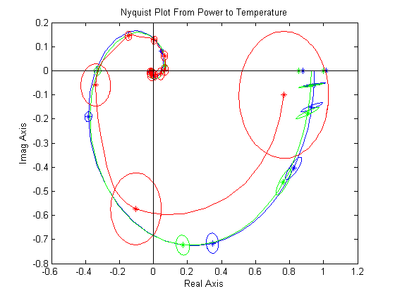 Figure 14: Nyquist plots of models m1, m2 and gs.
Additional Information
For more information on identification of dynamic systems with System Identification Toolbox visit the System Identification Toolbox product information page.